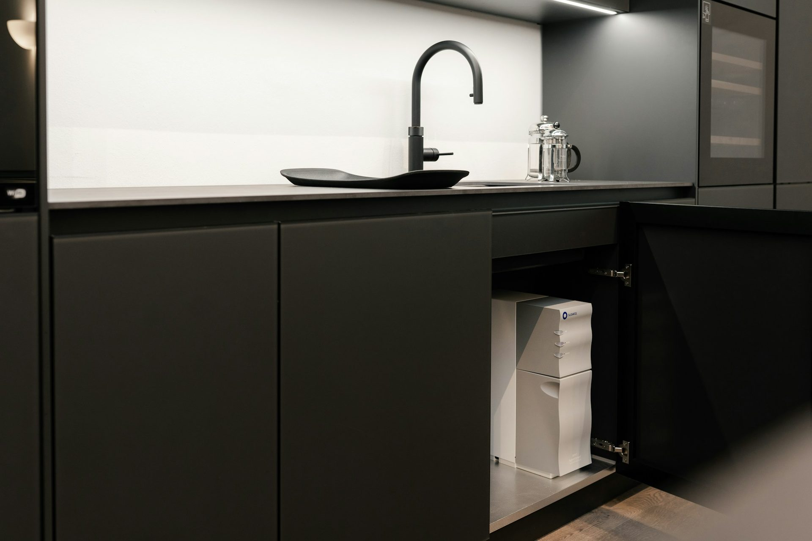
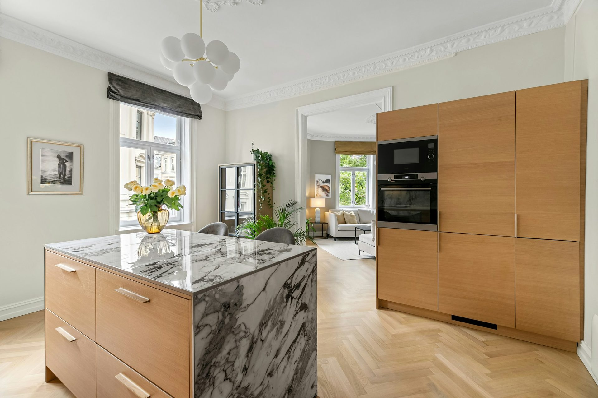

Secondary dwellings
in the Fraser Coast.
Hervey Bay and Maryborough have very different housing stock, and the council treats them differently in places.
The short answer
Whether you can build a secondary dwelling in the Fraser Coast, how large it may be, and whether it can be let to someone outside your household are all set by Fraser Coast Regional Council through its planning scheme, and those settings change. Nothing on this page is a substitute for reading the current scheme. Start at Fraser Coast Regional Council’s planning pages, confirm which zone and overlays apply to your lot, and get the answer in writing before you design anything. We supply the kitchen once you know what you are allowed to build.

What counts as a secondary dwelling
Councils rarely say “granny flat”. The planning term is generally secondary dwelling: a self-contained dwelling on the same lot as a house and subordinate to it. Self-contained means it has its own kitchen, bathroom and living space. That definition matters, because the moment a space contains a second kitchen it may be treated as a dwelling rather than as an extension, and a different assessment applies. If you are converting rather than building new, that reclassification is usually the thing that catches people.
What Fraser Coast Regional Council decides
The zone your lot sits in, the overlays that apply to it, the maximum size permitted, setbacks from boundaries, car parking, and whether the dwelling may be occupied by someone outside your household. Every one of those is set locally and every one of them can change. Hervey Bay and Maryborough have very different housing stock, and the council treats them differently in places. A rule you read about one does not necessarily apply to the other.
The local factor worth checking early
This is a strong retirement and downsizing market, so a large share of secondary dwellings here are built for family rather than for rent. That changes which assessment pathway applies.
Read the scheme, not the forum
Most confident answers online are wrong somewhere, because the person writing was in a different council area or reading a superseded version. Go to Fraser Coast Regional Council’s planning pages, find the current planning scheme, and confirm the zone and overlays for your specific lot. If the scheme is ambiguous — and they often are — a pre-lodgement conversation with the council costs nothing and settles it in writing.
What you will need drawn
A site plan showing the existing house, the proposed dwelling, setbacks and parking. Floor plans and elevations. Depending on the overlays, a stormwater plan, a bushfire or flood assessment, or an engineer’s certification. A building certifier handles the building approval; the planning approval, where one is needed, is the council’s.
Where the kitchen fits
The kitchen is the last thing to order and the first thing worth planning. A secondary dwelling kitchen is usually a compact run, and the two decisions that matter are where the waste can go and whether an oven earns its space. We supply flat packed or delivered assembled, cut to your measurements, with service drawings your trades rough in from. For a studio or single-room dwelling a kitchenette from $4,500 is often the better answer than a shrunken kitchen. We ship to Hervey Bay and everywhere else in Australia.
Last checked: September 2026. General orientation, not planning or building advice. Council requirements change and every property is assessed on its own facts — confirm the current position through Fraser Coast Regional Council’s planning pages or with a building certifier before you commit to anything.
What the kitchen costs
From a kitchenette
to fully bespoke.
Supplied and installed in Central Queensland; shipped flat pack or assembled anywhere in Australia. Every figure is a real range, not a from-price with the catches left out.

From $4,500
Kitchenette
For a studio, an under-house room or a short-stay unit. Sink, bench and cold storage; cooktop and microwave where they fit. Same carcasses and hardware as a full kitchen.
See what's included →
$15,000 – $23,000
Essence
Handleless, quiet, exact. Soft-matte doors on Blum soft-close runners with a stone benchtop. Our entry to bespoke, drawn to your room rather than picked from a catalogue.
See what's included →
$26,000 – $42,000
Maison
What most Rockhampton families build. Timber veneer against a full-height stone splashback, a waterfall island, integrated lighting and a butler’s pantry behind a hidden door.
See what's included →
$47,000 +
Atelier
No constraints. Book-matched slabs, curved and fluted cabinetry, solid brass, wine walls and a pantry built like a jewellery box. One project at a time.
See what's included →Frequently asked
Common questions
If your question is not here, call the studio. We would rather talk it through than have you guess.
Ask us directly →Can I build a granny flat in the Fraser Coast?
In most cases something is possible, but the size, siting and whether it can be let are all set by Fraser Coast Regional Council and vary by zone and by lot. Check the current planning scheme for your specific property rather than relying on a general answer.
Can I rent out a secondary dwelling in the Fraser Coast?
That is a planning question, not a building one, and councils differ. Some permit letting to anyone, some restrict occupation to a member of the household. Get the answer in writing before you build to a rental budget.
Do I need a planning approval as well as a building approval?
Often both. The building approval is handled by a certifier and covers construction. The planning approval covers whether the use is permitted on that lot. Which you need depends on the zone and the overlays.
Does a second kitchen change how the property is classified?
It can. A self-contained space with its own kitchen may be assessed as a dwelling rather than as part of the house, which brings different requirements. Ask the council before installing a second kitchen in an existing building.
How much is a kitchen for a secondary dwelling?
A kitchenette starts from $4,500 and a compact full kitchen from around $6,500, drawn to your measurements and delivered flat packed or assembled. Send the room dimensions for a fixed, itemised quote.
Delivered assembled
The assembly is done
before it arrives.
Carcasses built square on a bench, Blum hardware fitted, doors hung and adjusted to even gaps. On site you are fixing finished cabinets to a wall, not building them on the floor. Our own team fits it in Central Queensland; your installer fits it anywhere else in Australia. Prefer to build it yourself? The same kitchen ships flat pack.

Timber island, stone top
American oak and stone

Island with seating overhang

the Fraser Coast
Approval first.
Then send us the plan.
Once you know what Fraser Coast Regional Council will permit, send the dimensions and we will quote the kitchen, fixed and itemised, delivered to your site.